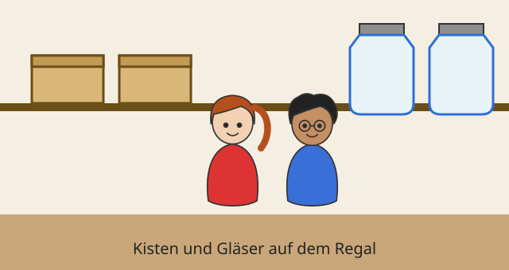
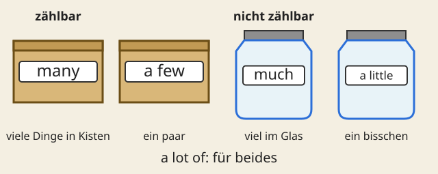

Kisten und Gläser: many, much und a lot of
Mit einem KI-Tutor lernen
Ein KI-Tutor erklärt dir diese Seite und hilft dir bei den Aufgaben. Wähl deinen Assistenten:
Mit Claude öffnen Mit ChatGPT öffnen Mit Mistral Vibe öffnen
Du nutzt dein eigenes Konto beim Anbieter. Der Assistent ist kein Angebot von lernapps.net: lernapps liefert nur Inhalte und Aufgaben. Die Wahl gilt für alle Seiten, nur auf diesem Gerät.
Gläser fürs Schulfest

Von links: Ellie (roter Pferdeschwanz) und Amir (Brille). Auf dem Regal stehen Kisten und Gläser.
Quelle: eigene Zeichnung. Lizenz: CC-BY-4.0.Mrs Parker, Ellies Mutter, backt Kuchen für das Schulfest. Dafür kommen Zutaten in den Lagerraum: Eier und Äpfel liegen in Kisten. Zucker, Reis und Saft kommen in Gläser. Mr Hill fragt: „Wie viel ist da?“
Das kannst du danach: Du sagst mit many, much, a lot of, a few und a little, wie viel von etwas da ist.
| Wort | Bedeutung |
|---|---|
| water | Wasser |
| milk | Milch |
| sugar | Zucker |
| rice | Reis |
| juice | Saft |
| cheese | Käse |
| bread | Brot |
| egg | Ei |
| apple | Apfel |
| got | have got = haben |
| hasn't got | hat nicht |
| a lot of | viel, viele |
| many | viele |
| much | viel |
| a few | ein paar |
| a little | ein bisschen |
Aufgabe
Lösung
Man kann Zucker nicht zählen. richtige Antwort
Eier kannst du zählen: ein Ei, zwei Eier. Zucker nicht, du kannst nur sagen, wie viel es ist. Darum steht er im Glas.
Zucker ist zu klein für eine Kiste.
Die Größe spielt keine Rolle. Es kommt darauf an, ob du das Ding zählen kannst.
Zucker ist ein Ei.
Ein Ei und Zucker sind verschieden. Ein Ei kannst du zählen, Zucker nicht.
Zählbares liegt in Kisten, Nicht-Zählbares in Gläsern.
many für Kisten, much für Gläser
Bei Kisten (zählbar) sagst du many („viele“) oder a few („ein paar“). Bei Gläsern (nicht zählbar) sagst du much („viel“) oder a little („ein bisschen“). a lot of passt zu Kisten und zu Gläsern.

Kisten links, Gläser rechts. a lot of steht für beides.
Quelle: eigene Zeichnung. Lizenz: CC-BY-4.0.| Kiste oder Glas | Etikett | Beispiel |
|---|---|---|
| Kiste (zählbar) | many · a few · a lot of | many cakes |
| Glas (nicht zählbar) | much · a little · a lot of | much milk |
Merke
In Aussagen sagst du meistens a lot of: a lot of cakes, a lot of milk. many und much stehen vor allem in Verneinungen und Fragen: not many cakes, not much milk, How many cakes? How much milk? a few und a little sagst du auch in Aussagen. Bei Gläsern gibt es keine Mehrzahl: Du sagst nicht „sugars“.
Übung
Aufgabe
Wähle das richtige Etikett.
Tipp
Frag dich, ob du das Ding zählen kannst (Kiste) oder nicht (Glas).
- Peter hat nicht viele Bücher. → Peter hasn't got … books.
- Amir hat nicht viel Reis. → Amir hasn't got … rice.
- Sophie hat ein paar Äpfel. → Sophie has … apples.
- Ellie hat ein bisschen Saft. → Ellie has … juice.
Lösung
- Peter hasn't got many books.
- Amir hasn't got much rice.
- Sophie has a few apples.
- Ellie has a little juice.
Aufgabe
Lösung
books richtige Antwort
Bücher kannst du zählen: ein Buch, zwei Bücher. Sie liegen in Kisten.
rice
Reis kannst du nicht zählen. Er kommt in ein Glas.
bags richtige Antwort
Taschen kannst du zählen. Sie liegen in Kisten.
cheese
Käse kannst du nicht zählen. Er kommt in ein Glas.
Zählbare Dinge (books, bags) stehen mit many oder a few. Nicht zählbare Dinge (rice, cheese) stehen mit much oder a little.
Aufgabe
Schreibe den Satz auf Englisch.
Tipp
Entscheide zuerst, ob das Ding zählbar ist (Kiste) oder nicht (Glas). Dann wählst du das Etikett.
- Mrs Parker hat nicht viel Zucker.
- Peter hat nicht viele Eier.
- Amir hat ein bisschen Käse.
- Sophie hat ein paar Taschen.
Lösung
- Mrs Parker hasn't got much sugar. (auch richtig: Mrs Parker has not got much sugar.; Mrs Parker doesn't have much sugar.; Mrs Parker hasn't got a lot of sugar.)
- Peter hasn't got many eggs. (auch richtig: Peter has not got many eggs.; Peter doesn't have many eggs.; Peter hasn't got a lot of eggs.)
- Amir has a little cheese. (auch richtig: Amir has got a little cheese.)
- Sophie has a few bags. (auch richtig: Sophie has got a few bags.)
Aufgabe
Lösung
Richtige Antwort: Die Aussage stimmt nicht.
apples sind zählbar, also eine Kiste. Dafür sagst du many oder a lot of, nicht much.
Aufgabe
Hör zu und schreibe den ganzen Satz auf.
Tipp
Hör genau auf das Etikett vor dem Ding. Ist es many, much, a few, a little oder a lot of?
- KI
- KI
- KI
Lösung
- Peter hasn't got many pens.
- Ellie has a little water.
- Sophie has a lot of bags.
Selbst sagen und füllen
Aufgabe
Hör zu, sprich nach und nimm dich auf. Vergleiche dann mit dem Original.
Tipp
Hör den Satz zuerst. Sprich dann langsam nach und achte auf das Etikett vor dem Ding.
- Amir has a few books.KI
- Mrs Parker hasn't got much rice.KI
- Peter has a little bread.KI
Zum Aufnehmen braucht diese Aufgabe JavaScript. Die Beispiele kannst du auch ohne anhören.
Lösung
- Amir has a few books.
- Mrs Parker hasn't got much rice.
- Peter has a little bread.
Offene Aufgabe
Mr Hill fragt, was du für das Schulfest mitbringst. Schreibe zwei Sätze: einen über etwas Zählbares und einen über etwas Nicht-Zählbares (zum Beispiel: I have a few pens. I have a little rice).
Eine gute Antwort enthält:
Lösung
I have a lot of apples. I have a little juice.
Wie es weitergeht
Die Gläser stehen im Regal. Aber Mrs Parker braucht für ihren Kuchen genaue Mengen, zum Beispiel eine Tasse Zucker. Auf der nächsten Seite machst du aus einem Glas wieder etwas Zählbares.